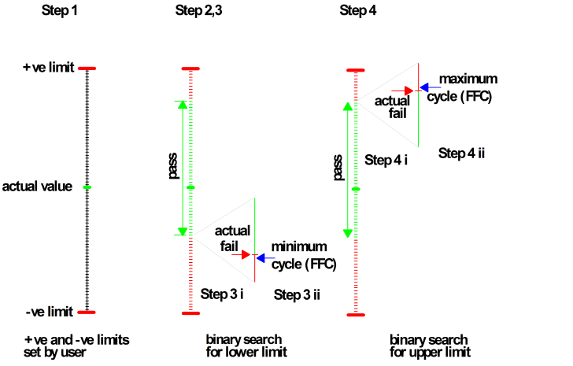

How is the Margin Determined?
The following procedure describes how the margins are determined in the default mode.
Default mode means:
- the option Only Test to First Transition is not selected
- the test is performed with the default number of steps, i.e. 50 steps.
Determine the margin:
- Set the range between the upper and lower limits on the particular hardware resource - in the example a level resource with the lower limit -ve and the upper limit +ve- is divided into 50 equal steps.
- Starting at the lower limit and stepping through the 50 intervals to the upper limit, the
following is performed at each step:
- the test system's resources are changed
- a functional test is performed
- a Pass/Fail result is obtained
- At the first Pass/Fail transition below the actual value, the following is carried out:
- a binary search is performed (see Binary Search Algorithm), and the actual fail value obtained.
- a functional test is performed with a fail setting - closest to the pass value - and the first failing cycle (FFC) is obtained. This value will be referred to as the minimum cycle.
- At the first Pass/Fail transition above the current value, the following is carried out:
- a binary search is performed (see Binary Search Algorithm), and the actual fail value obtained.
- a functional test is performed with a fail setting - closest to the pass value - and the
first failing cycle (FFC) is obtained. This value will be referred to as the maximum
cycle.Note Although the pin margin test might find more than one pass/fail transition below or above the actual value, a binary search (see Binary Search Algorithm) is only performed at the pass/fail transition closest to the actual value in each direction.
- The original test system settings are then restored.
This procedure is represented schematically in the figure below.
